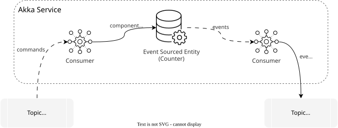

Consuming and producing
Consuming or producing a stream of events is a common Microservices pattern. It allows stream-based interaction between Akka services and other systems. The source of events can be the journal of an Event Sourced Entity, state changes in a Key Value Entity, or a message broker topic.
In this section, we will explore how you can use a Consumer component to:
-
Consume events emitted by an Event Sourced Entity within the same service
-
Consume state changes emitted by a Key Value Entity within the same service
-
Consume state changes emitted by a Workflow within the same service
-
Consume events or state from an Entity or Workflow in another service using service to service eventing
-
Consume messages from topics of Google Cloud Pub/Sub or Apache Kafka.
-
Produce messages to a Google Cloud Pub/Sub or Apache Kafka topic.
| Events and messages are guaranteed to be delivered at least once. This means that Consumers must be able to handle duplicated messages. |
Consumer’s Effect API
The Consumer’s Effect defines the operations that Akka should perform when an incoming message is delivered to the Consumer.
A Consumer Effect can either:
-
return a message to be published to a Topic (in case the method is a publisher)
-
return Done to indicate that the message was processed successfully
-
ignore the incoming message
For additional details, refer to Declarative Effects.
Consume from Event Sourced Entity
You can consume event from an Event Sourced Entity by adding @Consume.FromEventSourcedEntity as a type level annotation of your Consumer implementation.
@Component(id = "counter-events-consumer") (1)
@Consume.FromEventSourcedEntity(CounterEntity.class) (2)
public class CounterEventsConsumer extends Consumer { (3)
public Effect onEvent(CounterEvent event) { (4)
return switch (event) {
case ValueIncreased valueIncreased -> effects().done(); (5)
case ValueMultiplied valueMultiplied -> effects().ignore(); (6)
};
}
}| 1 | Set component id, like for any other component. |
| 2 | Set the source of the events to the Event Sourced Entity CounterEntity. |
| 3 | Extend the Consumer component class. |
| 4 | Add handler for CounterEvent events. |
| 5 | Return effect().done() when processing is completed. |
| 6 | Return effect().ignore() to ignore the event and continue the processing. |
If an exception is raised during the event processing. Akka runtime will redelivery the event until the application process it without failures.
When deleting Event Sourced Entities, and want to act on it in a consumer, make sure to persist a final event representing the deletion before triggering delete.
Starting from Snapshot
A Consumer that processes events from an Event Sourced Entity can optionally define a @SnapshotHandler method to receive entity snapshots. This can provide significant performance improvements when a new consumer needs to catch up on a long event history.
When a @SnapshotHandler is defined, the consumer will start processing from the most recent snapshot instead of replaying historical events. After processing the snapshot, subsequent events are processed normally.
@SnapshotHandler
public Effect onSnapshot(Integer value) {
return effects().done();
}The @SnapshotHandler annotation marks the method that will receive entity snapshots. The parameter type must match the state type of the Event Sourced Entity.
Consume from Key Value Entity
You can consume state changes from a Key Value Entity. To receive messages with the entity state changes, annotate the Consumer with @Consume.FromKeyValueEntity and specify the class of the entity. Although it looks similar to an Event Sourced Entity Consumer, the semantics are slightly different. The Key Value Entity Consumer is guaranteed to receive the most recent state change, but not necessarily all changes. Normally it will receive all changes, but changes may be omitted in case of a very high update pace, and a new consumer will not see all historical changes.
@Component(id = "shopping-cart-consumer")
@Consume.FromKeyValueEntity(ShoppingCartEntity.class) (1)
public class ShoppingCartConsumer extends Consumer {
public Effect onChange(ShoppingCart shoppingCart) { (2)
//processing shopping cart change
return effects().done();
}
@DeleteHandler
public Effect onDelete() { (3)
//processing shopping cart delete
return effects().done();
}
}| 1 | Set the source to the Key Value Entity ShoppingCartEntity. |
| 2 | Add a handler for ShoppingCart state update. |
| 3 | Add a handler when the entity is deleted. This handler is optional if the entity is never deleted. |
Consume from Workflow
You can consume state changes from a Workflow. To receive messages with the state changes, annotate the Consumer with @Consume.FromWorkflow and specify the class of the workflow.
@Component(id = "transfer-state-consumer")
@Consume.FromWorkflow(TransferWorkflow.class) (1)
public class TransferStateConsumer extends Consumer {
public Effect onUpdate(TransferState transferState) { (2)
// processing transfer state change
return effects().done();
}
@DeleteHandler
public Effect onDelete() { (3)
// processing transfer state delete
return effects().done();
}
}| 1 | Set the source to the TransferWorkflow. |
| 2 | Add a handler for TransferState state update. |
| 3 | Add a handler when TransferState state is deleted. This handler is optional if the workflow is never deleted. |
If you need additional information about change origin, executed steps, etc., you can encode it in the state class.
Service to Service Eventing
An Akka application can be comprised of multiple services working to support specific business requirements. Although each service is an independent deployable unit, often times information needs to flow between those services.
Akka provides brokerless at-least-once event delivery across Akka services in the same project through the Service to Service eventing.
The source of the events is an Event Sourced Entity or Key Value Entity. Its events/changes can be published as a stream and consumed by another Akka service without the need to set up a message broker.
| For eventing from an entity inside the same Akka service as the consuming component, use regular @Consume.FromEventSourcedEntity instead of Service to Service eventing. |
Event Producer
The event producer is a Consumer that consumes the events from a local source and makes them available for consumption from another service. This is done with an additional @Produce.ServiceStream annotation, the stream id is what identifies the specific stream of events from the consuming services. The ACL configuration is set to allow access from specific (or all) Akka services.
To illustrate how to publish entity events, assume the existence of a CustomerEntity that emits events of types: CustomerCreated, NameChanged and AddressChanged. You will get the events delivered to a Consumer, transform them to a public set of event types and let them be published to a stream.
@Component(id = "customer-events-service")
@Consume.FromEventSourcedEntity(CustomerEntity.class) (1)
@Produce.ServiceStream(id = "customer_events") (2)
@Acl(allow = @Acl.Matcher(service = "*")) (3)
public class CustomerEvents extends Consumer {
public Effect onEvent(CustomerEvent event) { (4)
return switch (event) {
case CustomerCreated created -> effects()
.produce(new CustomerPublicEvent.Created(created.email(), created.name()));
case NameChanged nameChanged -> effects()
.produce(new CustomerPublicEvent.NameChanged(nameChanged.newName()));
case AddressChanged __ -> effects().ignore(); (5)
};
}
}| 1 | Identify which Event Sourced Entity to publish events for. |
| 2 | Set stream public identifier for Consumers. |
| 3 | Allow access from other Akka services (in the same project), but not from the public internet. |
| 4 | Event handler transforms service internal event model into public API types. |
| 5 | Filter event types that should not be available to consuming services using ignore(). |
Starting from Snapshot can be used for service-to-service eventing. The snapshot handling is defined on the producer side using @Produce.ServiceStream, where the snapshot is transformed to an event that consumers receive like any other event.
Event Consumer
The consuming side can be a Consumer or a View, annotated with @Consume.FromStream with a service identifying the publishing service, and the id of the stream to subscribe to.
@Component(id = "customers-by-name")
public class CustomersByNameView extends View {
@Consume.FromServiceStream( (1)
service = "customer-registry", (2)
id = "customer_events" (3)
)
public static class CustomersByNameUpdater extends TableUpdater<CustomerEntry> {
public Effect<CustomerEntry> onEvent( (4)
CustomerPublicEvent.Created created
) {
var id = updateContext().eventSubject().get();
return effects().updateRow(new CustomerEntry(id, created.email(), created.name()));
}
public Effect<CustomerEntry> onEvent(CustomerPublicEvent.NameChanged nameChanged) {
var updated = rowState().withName(nameChanged.newName());
return effects().updateRow(updated);
}
}
@Query("SELECT * as customers FROM customers_by_name WHERE name = :name")
public QueryEffect<CustomerEntries> findByName(String name) {
return queryResult();
}
}| 1 | Annotate the Table Updater with @Consume.FromStream to subscribe to an event stream from another Akka service. |
| 2 | The name of the Akka service publishing the event stream. |
| 3 | The public identifier of the specific stream. Corresponds to the @Produce.ServiceStream id in the service publishing the event stream. |
| 4 | Handler method per message type that the stream may contain. |
| If you are looking to test this locally, you will likely need to run the 2 services with different ports. For more details, consult Running multiple services. |
Consume from a message broker Topic
To receive messages from a Google Cloud Pub/Sub or Apache Kafka topic, annotate the Consumer class with @Consume.FromTopic and specify the topic name.
| Only topic names are referenced and no additional details about how to connect to the topics are needed. When deploying the application there must be a broker configuration in the Akka project, with credentials and details on how connect to the broker. For details about configuring a broker see Configure message brokers. |
In the following example the events from the topic are delivered to the Consumer and logged.
@Component(id = "counter-events-topic-consumer")
@Consume.FromTopic(value = "counter-events") (1)
public class CounterEventsTopicConsumer extends Consumer {
private Logger logger = LoggerFactory.getLogger(CounterEventsTopicConsumer.class);
public Effect onValueIncreased(ValueIncreased event) { (2)
logger.info("Received increased event: " + event.toString());
return effects().done(); (3)
}
public Effect onValueMultiplied(ValueMultiplied event) { (2)
logger.info("Received multiplied event: " + event.toString());
return effects().done();
}
}| 1 | Consume from topic 'counter-events'. |
| 2 | Add handler for a given message type. |
| 3 | Mark processing as completed. |
| By default, Akka assumes the messages in the topic were serialized as JSON and as such, deserializes them into the input type of your handlers by taking advantage of CloudEvents standard. |
Receiving CloudEvents
This time instead of a single event handler, we have a handler for each message type. Consumer is able to match the payload type to the handler method based on the ce-type attribute of the CloudEvent message.
Akka uses the CloudEvents standard when receiving from and publishing to topics. The CloudEvents specification standardizes message metadata so that systems can integrate more easily.
Describing the structure of the message payload is the CloudEvents feature most important to Akka.
An example of that is the capability to send serialized JSON messages and have Akka deserialize them accordingly.
To allow proper reading of JSON messages from external topics, the messages need to specify the message attributes:
-
Content-Type=application/json -
ce-specversion=1.0 -
ce-type= fully qualified name (e.g.com.example.ValueIncreased)
(The ce- prefixed attributes are part of the CloudEvents specification.)
Receiving Bytes
If the content type is application/octet-stream, no content type is present, or the type is unknown to Akka, the message is treated as a binary message. The topic subscriber method must accept the byte[] message.
public class RawBytesConsumer extends Consumer {
public Effect onMessage(byte[] bytes) { (1)
// deserialization logic here
return effects().done();
}
}| 1 | When consuming raw bytes messages from a topic the input type must be byte[]. |
If a Consumer produce messages of byte[] type to a topic, the messages published to the topic will have content-type application/octet-stream.
Producing to a message broker Topic
Producing to a topic is the same as producing to a stream in service to service eventing. The only difference is the @Produce.ToTopic annotation. Used to set a destination topic name.
| To guarantee that events for each entity can be read from the message broker in the same order they were written, the cloud event subject id must be specified in metadata along with the event. See how to in Metadata below. |
@Component(id = "counter-journal-to-topic")
@Consume.FromEventSourcedEntity(CounterEntity.class) (1)
@Produce.ToTopic("counter-events") (2)
public class CounterJournalToTopicConsumer extends Consumer {
public Effect onEvent(CounterEvent event) { (3)
return effects().produce(event); (4)
}
}| 1 | Set the source to events from the CounterEntity. |
| 2 | Set the destination to a topic name 'counter-events'. |
| 3 | Add handler for the counter events. |
| 4 | Return Effect.produce to produce events to the topic. |
| Only topic names are referenced and no additional details about how to connect to the topics are needed. When deploying the application there must be a broker configuration in the Akka project, with credentials and details on how connect to the broker. For details about configuring a broker see Configure message brokers. |
At-least-once delivery and deduplication
All consumers in Akka use at-least-once delivery semantics. It means that messages may be delivered more than once in cases of network failures, process restarts, or other transient issues. To maintain data integrity, your consumer implementations must handle duplicate messages gracefully.
| Deduplication is not handled automatically by Akka. You must implement deduplication logic explicitly in your consumer code. |
For detailed guidance on implementing deduplication strategies, including idempotent updates and sequence number tracking, see Message deduplication.
Handling Serialization
Check serialization documentation for more details.
Deployment-dependent sources
It is possible to use environment variables to control the name of the service or topic that a consumer consumes from, this is useful for example for using the same image in staging and production deployments but having them consume from different source services.
Referencing environment variables is done with the syntax ${VAR_NAME} in the service parameter of the @Consume.FromStream annotation or value parameter of the @Consume.FromTopic annotation.
| Changing the service or topic name after it has once been deployed means the consumer will start over from the beginning of the event stream. |
See akka service deploy -h for details on how to set environment variables when deploying a service.
Metadata
For many use cases, a Consumer from Event Sourced or Key Value Entity will trigger other services and needs to pass the entity ID to the receiver. You can include this information in the event payload (or Key Value Entity state) or use built-in metadata to get this information. It is made available to the consumer via messageContext().eventSubject().
Using metadata is also possible when producing messages to a topic or a stream. You can pass some additional information which will be available to the consumer.
@Component(id = "counter-journal-to-topic-with-meta")
@Consume.FromEventSourcedEntity(CounterEntity.class)
@Produce.ToTopic("counter-events-with-meta") (1)
public class CounterJournalToTopicWithMetaConsumer extends Consumer {
public Effect onEvent(CounterEvent event) {
String counterId = messageContext().eventSubject().get(); (2)
Metadata metadata = Metadata.EMPTY.add("ce-subject", counterId);
logger.info("Received event for counter id {}: {}", counterId, event);
return effects().produce(event, metadata); (3)
}
}| 1 | Get the counter ID from the metadata. |
| 2 | Publish event to the topic with custom metadata. |
Testing the Integration
When an Akka service relies on a broker, it might be useful to use integration tests to assert that those boundaries work as intended. For such scenarios, you can either:
-
Use TestKit’s mocked topic:
-
this offers a general API to inject messages into topics or read the messages written to another topic, regardless of the specific broker integration you have configured.
-
-
Run an external broker instance:
-
if you are interested in running your integration tests against a real instance, you need to provide the broker instance yourself by running it in a separate process in your local setup and make sure to disable the use of TestKit’s test broker. Currently, the only external broker supported in integration tests is Google PubSub Emulator.
-
TestKit Mocked Incoming Messages
Following up on the counter entity example used above, consider an example (composed by 2 Consumer and 1 Event Sourced Entity) as pictured below:
TODO: convert this diagram once we have a standard language for this

In this example:
-
commands are consumed from an external topic
counter-commandsand forwarded to aCounterentity; -
the
Counterentity is an Event Sourced Entity and has its events published to another topiccounter-events.
To test this flow, we will take advantage of the TestKit to be able to push commands into the counter-commands topic and check what messages are produced to topic counter-events.
public class CounterIntegrationTest extends TestKitSupport { (1)
private EventingTestKit.IncomingMessages commandsTopic;
private EventingTestKit.OutgoingMessages eventsTopic;
@BeforeAll
public void beforeAll() {
super.beforeAll();
commandsTopic = testKit.getTopicIncomingMessages("counter-commands"); (2)
eventsTopic = testKit.getTopicOutgoingMessages("counter-events");
}
@Test
public void verifyCounterEventSourcedPublishToTopic() {
var counterId = "test-topic";
var increaseCmd = new IncreaseCounter(counterId, 3);
var multipleCmd = new MultiplyCounter(counterId, 4);
commandsTopic.publish(increaseCmd, counterId); (3)
commandsTopic.publish(multipleCmd, counterId);
var eventIncreased = eventsTopic.expectOneTyped(ValueIncreased.class, ofSeconds(20)); (4)
var eventMultiplied = eventsTopic.expectOneTyped(ValueMultiplied.class);
assertEquals(increaseCmd.value(), eventIncreased.getPayload().value()); (5)
assertEquals(multipleCmd.value(), eventMultiplied.getPayload().multiplier());
}
}| 1 | Use the TestKitSupport class. |
| 2 | Get a IncomingMessages for topic named counter-commands and OutgoingMessages for counter-events from the TestKit. |
| 3 | Build 2 commands and publish both to the topic. Note the counterId is passed as the subject id of the message. |
| 4 | Read 2 messages, one at a time. We pass in the expected class type for the next message. |
| 5 | Assert the received messages have the same value as the commands sent. |
| In the example above we take advantage of the TestKit to serialize / deserialize the messages and pass all the required metadata automatically for us. However, the API also offers the possibility to read and write raw bytes, construct your metadata or read multiple messages at once. |
Configuration
Before running your test, make sure to configure the TestKit correctly.
@Override
protected TestKit.Settings testKitSettings() {
return TestKit.Settings.DEFAULT.withTopicIncomingMessages("counter-commands") (1)
.withTopicOutgoingMessages("counter-events") (2)
}| 1 | Mock incoming messages from the counter-commands topic. |
| 2 | Mock outgoing messages from the counter-events topic. |
Testing with metadata
Typically, messages are published with associated metadata. If you want to construct your own Metadata to be consumed by a service or make sure the messages published out of your service have specific metadata attached, you can do so using the TestKit, as shown below.
@Test
public void verifyCounterCommandsAndPublishWithMetadata() {
var counterId = "test-topic-metadata";
var increaseCmd = new IncreaseCounter(counterId, 10);
var metadata = CloudEvent.of( (1)
"cmd1",
URI.create("CounterTopicIntegrationTest"),
increaseCmd.getClass().getName()
)
.withSubject(counterId) (2)
.asMetadata()
.add("Content-Type", "application/json"); (3)
commandsTopic.publish(testKit.getMessageBuilder().of(increaseCmd, metadata)); (4)
var increasedEvent = eventsTopicWithMeta.expectOneTyped(IncreaseCounter.class);
var actualMd = increasedEvent.getMetadata(); (5)
assertEquals(counterId, actualMd.asCloudEvent().subject().get()); (6)
assertEquals("application/json", actualMd.get("Content-Type").get());
}| 1 | Build a CloudEvent object with the 3 required attributes, respectively: id, source and type. |
| 2 | Add the subject to which the message is related, that is the counterId. |
| 3 | Set the mandatory header "Content-Type" accordingly. |
| 4 | Publish the message along with its metadata to topic commandsTopic. |
| 5 | Upon receiving the message, access the metadata. |
| 6 | Assert the headers Content-Type and ce-subject (every CloudEvent header is prefixed with "ce-") have the expected values. |
One Suite, Multiple Tests
When running multiple test cases under the same test suite and thus using a common TestKit instance, you might face some issues if unconsumed messages from previous tests mess up with the current one. To avoid this, be sure to:
-
have the tests run in sequence, not in parallel;
-
clear the contents of the topics in use before the test.
As an alternative, you can consider using different test suites which will use independent TestKit instances.
@BeforeEach (1)
public void clearTopics() {
eventsTopic.clear(); (2)
eventsTopicWithMeta.clear();
}| 1 | Run this before each test. |
| 2 | Clear the topic ignoring any unread messages. |
| Despite the example, you are neither forced to clear all topics nor to do it before each test. You can do it selectively, or you might not even need it depending on your tests and the flows they test. |
External Broker
To run an integration test against a real instance of Google PubSub (or its Emulator) or Kafka, use the TestKit settings to override the default eventing support, as shown below:
@Override
protected TestKit.Settings testKitSettings() {
return TestKit.Settings.DEFAULT.withEventingSupport(
TestKit.Settings.EventingSupport.KAFKA
);
}Service-to-Service Streams
The TestKit also supports Service to Service Eventing in both directions — mocking the upstream stream a consuming service reads from, and capturing the public events a producing service emits for downstream consumers.
Testing a Consumer
In a service that consumes another service’s stream via @Consume.FromServiceStream, the TestKit can stand in for the upstream producer. Messages published to the mocked stream flow through the consumer’s or view’s real logic.
The event-sourced-customer-registry-subscriber sample consumes the customer_events stream produced by customer-registry (see Service to Service Eventing). Its integration test mocks that upstream stream:
| 1 | Mock the upstream stream by service and stream id — matches the values in the consumer’s @Consume.FromServiceStream annotation. |
| 1 | Register the mocked stream in the TestKit settings. |
| 2 | Retrieve an IncomingMessages handle for that stream. |
| 3 | Publish messages of the public event type the producing service would emit. The second argument is the subject id (for example, an entity id). |
Testing a Producer
For a service that produces a stream via @Produce.ServiceStream — typically with a transformation from internal events to a narrower public event type — the TestKit can capture what is emitted so the transformation can be asserted. Unlike the consumer case, nothing is mocked: the real transformation path runs and the TestKit observes the emitted public events.
The event-sourced-customer-registry sample has a CustomerEvents producer that transforms internal CustomerEvent values into CustomerPublicEvent values for downstream services. Its integration test verifies that transformation:
Unresolved include directive in modules/sdk/pages/consuming-producing.adoc - include::example$event-sourced-customer-registry/src/test/java/customer/api/CustomerEventsOutgoingIntegrationTest.java[]| 1 | Register the outgoing stream to capture. The values must match the producer’s @Produce.ServiceStream id and the service name that downstream consumers use. |
Unresolved include directive in modules/sdk/pages/consuming-producing.adoc - include::example$event-sourced-customer-registry/src/test/java/customer/api/CustomerEventsOutgoingIntegrationTest.java[]| 1 | Register the outgoing stream in the TestKit settings. |
| 2 | Retrieve an OutgoingMessages handle for the stream. |
| 3 | Drive the service as usual — invoking the entity here triggers the internal event that the producer transforms. |
| 4 | Assert against the transformed public event type. |
OutgoingMessages exposes the same assertions used for topic outgoing messages, such as expectN(…) to read several messages or expectNone(…) to verify that a given internal event produces no public event (for example, when the transformation uses effects().ignore()).
Multi-region replication
Consumers are not replicated directly in the same way as for example Event Sourced Entity replication. A Consumer receives events from entities in the same service, or another service, in the same region. The entities will replicate all events across regions and identical processing can occur in the consumers of each region.
The origin of an event is the region where a message was first created. You can see the origin from messageContext().hasLocalOrigin() or messageContext().originRegion() and perform conditional processing of the event depending on the origin, such as ignoring events from other regions than the local region where the Consumer is running. The local region can be retrieved with messageContext().selfRegion().
A Consumer can also receive messages from a broker topic, and that could be regional or global depending on how the message broker is configured.